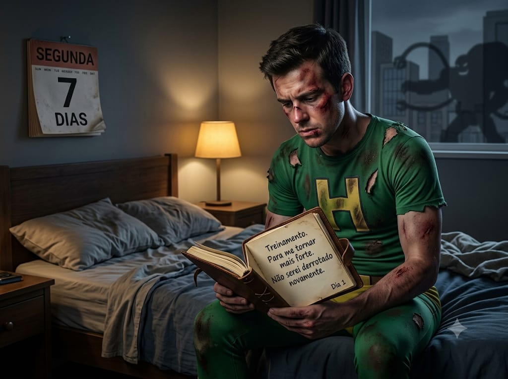

Ao retorno do supermercado me deparo com algo inacreditavel, era meu arque inimigo , oh terrivel Dr Betonera,
me deparando com meu inimigo me vejo em uma situação vuneravel onde não esta utilizando meu uniforme de heroi,
se tivesse apenas o emfrentado revelaria minha identidade a ele prejudiando aqueles que são próximos a mim .
Ao chegar em casa e pegar meu uniforme vou ao encontro do Dr Betonera , ao lutar contra ele percebo que ainda
sou fraco
não consigo ainda usar meus poderes como gostaria , por isso preciso de um treinamento , para me tornar mais
mais forte.
Chegando em casa derrotado da luta contra o Dr, me vejo na obrigação de me melhorar para que não seja novamente
derrotado.
Sete dias após a derrota contra o Betonera , venho treinando e me melhorando para que não seja derrotado
novamente.

visite o proximo cap em aqui